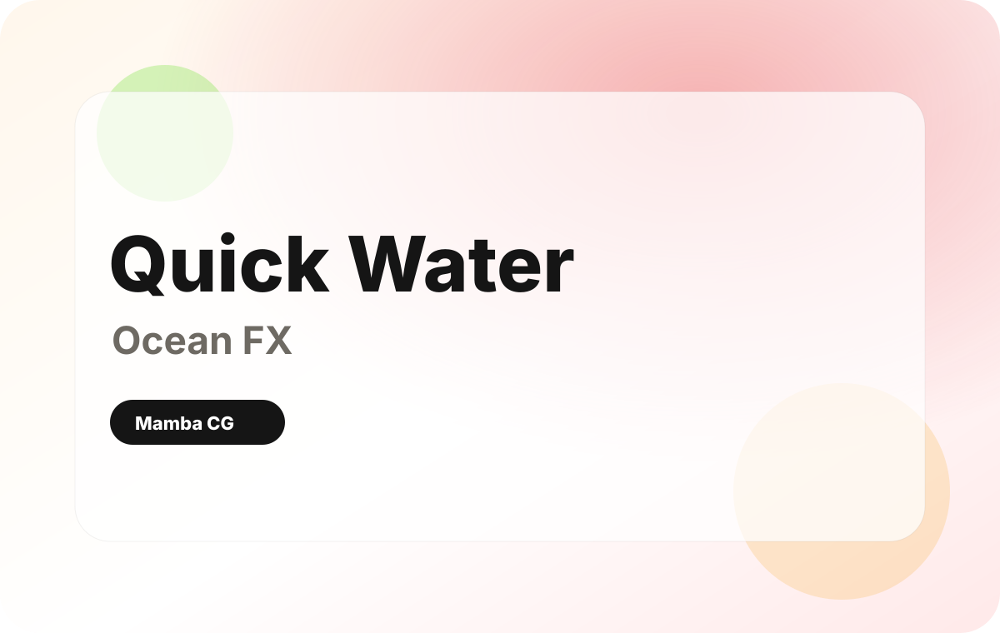
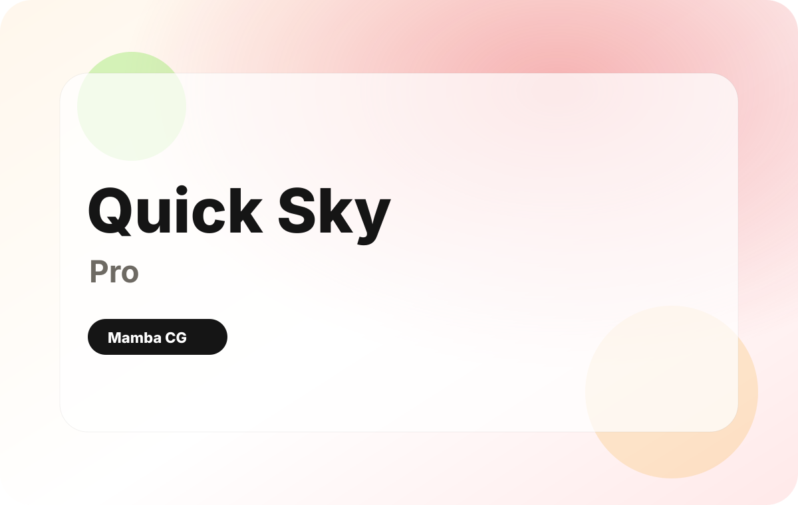
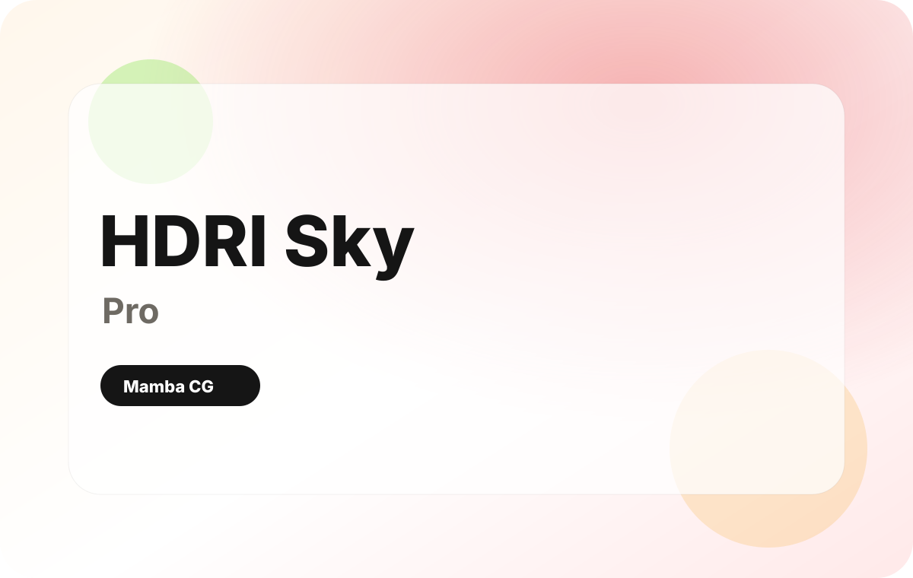

Lighting setups
Start with practical lighting workflows and support your scene with better environment light.
Professional Blender tools for lighting, sky, water, and scene optimization. Build cinematic environments faster without repeating the same manual setup in every project.
These addons help you create the parts of a Blender scene that usually take the most setup time: light, sky, water, atmosphere and environment mood.
Start with practical lighting workflows and support your scene with better environment light.
Add cloud layers, atmosphere and animated skies without building everything from scratch.
Create oceans, pools, fountains and small water surfaces with clear controls.
Reduce repeated setup work and move from blank scene to final render faster.
Choose the tool that solves your current scene problem, then open the product page on Superhive to buy or learn more.

Create realistic oceans, waves, pools, baths, fountains and small water surfaces with a clean Blender workflow.
View on Superhive
Browse HDRI previews inside Blender, create worlds and skies, and combine HDRI lighting with cloud presets.
View on Superhive
Use animated cloud presets, wind controls and cloud layers to build atmospheric Blender skies faster.
View on Superhive
Quick OceanFX is a Blender water shader addon for artists who need oceans, pools, fountains, baths and small water surfaces without rebuilding a custom shader system for every project. Water can make an environment feel cinematic, but it often slows production because reflections, transparency, wave scale and material response all need careful tuning. Quick OceanFX gives you a faster starting point with a clean workflow for water scenes.
Use it when you need a render-ready water surface for environment art, product shots, architectural visualization or cinematic animation. It is designed to reduce repetitive setup work and help you focus on the shot: composition, lighting, mood and final render quality. Pair it with HDRI Sky Pro or Quick Sky Pro when the water needs believable reflections and atmosphere.
View Quick OceanFX
Quick Sky Pro is a Blender sky addon designed to create realistic cloud systems, atmospheric backgrounds and animated sky presets faster. Instead of spending time building complex sky materials and cloud layers manually, you can start from ready cloud presets and adjust the look for your scene. This makes it useful for cinematic shots, environment renders, animation, concept art and product scenes that need a stronger atmosphere.
The addon helps answer a common production problem: the scene is modeled, but the sky still feels empty or flat. Quick Sky Pro gives you a practical way to add visual depth, cloud movement and weather mood while keeping the workflow approachable. It works best when combined with good lighting, HDRI setup and scene composition.
View Quick Sky Pro
HDRI Sky Pro is a Blender lighting workflow addon for artists who want faster environment lighting and cleaner HDRI setup. HDRI lighting usually defines the first impression of a render: reflections, contrast, color and overall mood all depend on the world setup. The addon helps you preview and apply HDRI-based lighting more efficiently so you can reach a usable scene state sooner.
Use HDRI Sky Pro when you need a better lighting foundation for product renders, outdoor environments, water scenes or sky-based compositions. It supports a practical workflow: choose an HDRI, build the world lighting, then adjust the scene with additional sky, water or light tools. The result is a faster path from blank Blender scene to a render that already has believable mood and reflections.
View HDRI Sky ProDownload the product from Superhive and enable it in Blender preferences.
Start from a water, sky, cloud or HDRI setup that matches your scene.
Tune scale, movement, lighting mood and render settings for the final shot.
The goal is simple: install the addon, choose the right setup, tune it for your scene and keep creating.
See how it works in real production workflow.
Customer quotes can be replaced with verified marketplace reviews when available.
"The presets make environment setup much faster and easier to iterate."
"Useful when I need a render-ready sky or water look without rebuilding nodes."
"A practical toolkit for getting from blockout to cinematic mood quickly."
They help with water shaders, realistic skies, HDRI lighting and faster environment scene setup.
They are useful for both. Beginners get a clearer starting point, while experienced artists reduce repeated setup work.
No. They speed up technical setup so you can spend more time on composition, lighting decisions and render quality.
Use the product buttons on this page to open Superhive / Blender Market listings and check current pricing and Blender version support.
Choose the addon you need now, or browse the full Mamba CG store on Superhive.